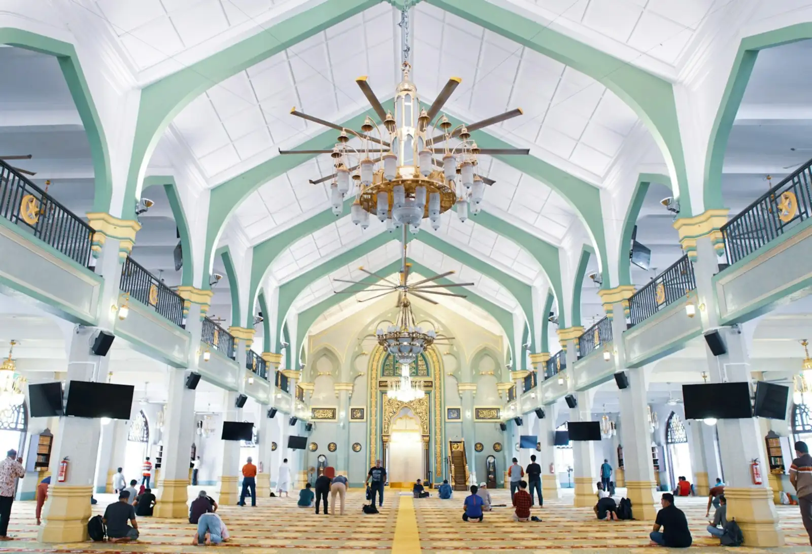

Administration
Administration and facilities staff keep the building open, the programs running, and the community served, day in and day out.
Reach the office at admin@virginmarymosque.org.au or (03) 8087 0900.

The people who lead prayer, teach, steward the building, and keep the community running — seeking the pleasure of Allah in serving His house.
Photo: SR / Unsplash
Imam
Our imam leads the congregation, teaches from the minbar, and is there for anyone who needs guidance.
The daily prayers and Jumu’ah.
In Arabic and English.
Available for religious guidance and pastoral care.
To arrange a conversation with the imam, contact the office.
Pastoral care & counselling →Governance
The Virgin Mary Mosque (Masjid Maryam) has served the community since 2006, held in trust for the worshippers it serves. For governance enquiries, contact admin@virginmarymosque.org.au or call (03) 8087 0900.
Staff & volunteers
Administration and facilities staff keep the building open, the programs running, and the community served, day in and day out.
Reach the office at admin@virginmarymosque.org.au or (03) 8087 0900.
Volunteers help across the masjid’s programs, events and day-to-day life — and there is always room for another pair of hands.
Join the team →Get involved
Whether you can give an hour a week or a hand at Eid, your time is a sadaqah that keeps this masjid alive.